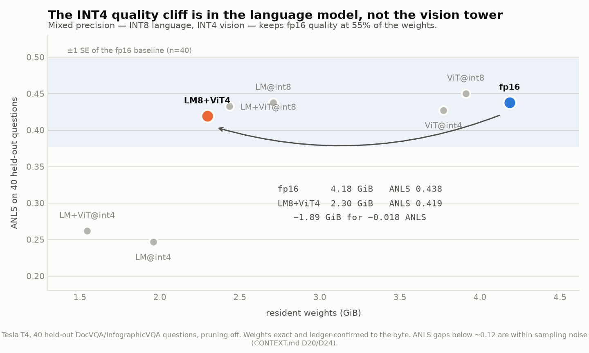
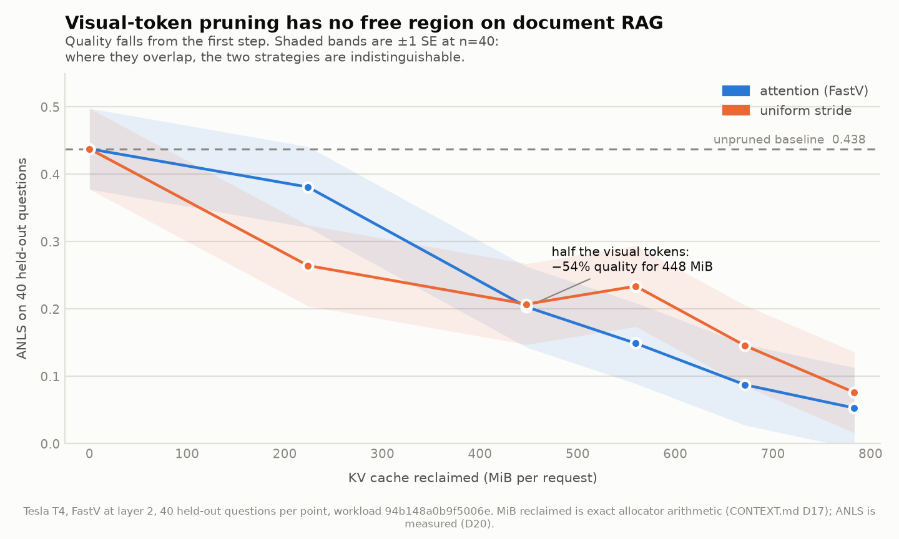

Systems engineering · build report
A multimodal retrieval-augmented generation stack — retrieval, a 2.2-billion-parameter vision-language model, paged KV cache, continuous batching, and a streaming server — built from scratch to fit a memory budget the unmodified pipeline exceeds before it answers a single question.
What breaks, and why it is not obvious
You want to ask questions about scanned documents — invoices, reports, infographics — and get answers grounded in the actual pages, not in what a model half-remembers.
The standard recipe is retrieval-augmented generation: find the pages most likely to hold the answer, put them in front of a model that can read images, and let it answer. Wiring that up with off-the-shelf libraries takes an afternoon.
The difficulty appears when it has to run on a small GPU — a laptop card, a kiosk, an on-premise box handling documents too sensitive to send to an API. This project fixed the budget at 4 GB, the exact size of the development machine's card, and that single number breaks the easy version.
Three things compete for the same 4 GB, and they scale differently:
Add them: 6.12 GB against a 4 GB ceiling. Not slow — it does not run. And the measured baseline agrees: the unmodified HuggingFace pipeline peaks at 5.76 GB answering one question.
Four levers, and the honest finding that none is enough alone
Four techniques, each attacking a different term in that sum:
No single lever gets there at full quality. Quantization takes the pipeline from 6.12 GB to 4.24 — still over. The only configuration that fits on its own is 4-bit language weights, and that costs 44% of answer quality. Closing the last 0.24 GB needs the second lever. The two are independent, which is exactly why the project needed both.
That sentence did not exist until the numbers were stacked in one chart. It is a more interesting claim than the one it replaced, and it is the answer to "why build all four?"
Written here, not imported
No LangChain, no LlamaIndex, no model.generate(). The boundary was drawn
deliberately and held: HuggingFace supplies weight loading, the tokenizer, and the vision
tower's forward pass. Everything downstream of the decoder's input embeddings is original.
| Component | What it does | Why it was not bought off the shelf |
|---|---|---|
| Decoder | Attention, RoPE, RMSNorm, grouped-query attention, SwiGLU | Numerically matched to HuggingFace's eager path so a cache bug cannot hide behind an implementation difference |
| Block allocator | Fixed-size KV pages, refcounts, copy-on-write | The memory thesis lives here; a leak or double-free is the project failing |
| Paged cache | Block tables, prefix sharing, preemption | Head-major pool layout removes one full copy per attention step |
| Scheduler | Admission, chunked prefill, preemption policy | Contains no tensors at all, so its state machine tests in milliseconds with no GPU |
| Quantizer | Group-wise INT4/INT8, symmetric, packed two per byte | Per-component bit widths — the shipping configuration mixes them |
| Compressor | FastV visual-token pruning at a chosen layer | Scores only the last attention row: 870 KB instead of 9 GB |
| Retrieval | TF-IDF over page OCR, flat exhaustive index | Interface-first, so an approximate index drops in without touching callers |
| Server | OpenAI-compatible /v1/chat/completions, SSE streaming |
Scheduler owns the GPU on one thread; asyncio touches it only through queues |
Every row is code in this repository with tests against it. The measurement harness was built before any feature work, because a benchmark added afterwards measures whatever the code already does.
Measured on a Tesla T4 · frozen workload 94b148a0b9f5006e
Eight configurations, varying which half of the model is quantized and to how many bits. The finding contradicts what the plan expected — the vision tower was supposed to be fragile, and it is not.
| Configuration | Weights | Predicted error | Answer quality | Decode speed |
|---|---|---|---|---|
| Full precision | 4.185 GB | 0 B | 0.438 | 1.00× |
| Vision INT4 only | 3.772 GB | 0 B | 0.427 | 0.98× |
| Language INT8 | 2.708 GB | 0 B | 0.438 | 0.42× |
| Language INT8 + vision INT4 | 2.296 GB | 0 B | 0.419 | 0.42× |
| Language INT4 | 1.958 GB | 0 B | 0.247 | 0.27× |
| Language + vision INT4 | 1.546 GB | 0 B | 0.262 | 0.27× |
Quality is ANLS on 40 held-out document questions. Predicted error is the gap between a byte count computed on a laptop with no weights loaded and the bytes the loaded model actually held on the GPU — zero on every arm.
INT8 on the language model is answer-identical. Not "close" — the same
float, 0.4378445165945166, produced by three separate runs across two
different scripts. Every one of the 40 greedy answers is unchanged.
The vision tower is nearly free to quantize; the language model is not. Vision-only INT4 costs 2.4% of quality, inside sampling noise. Language-only INT4 costs 44%. That asymmetry is what makes mixed precision the configuration to ship, and it was not in the original experiment grid — the grid applied one bit width to everything, so the best operating point was invisible until the results forced a new arm.
Decode speed depends on language precision and nothing else. Grouped that way, arms differing only in vision precision agree to 2.4%, while arms differing in language precision separate by 2.4× and 3.8×.

Emphasis rather than eight colours: the story is which configuration is the knee, not that there are eight of them.
Visual-token pruning was expected to remove 50–75% of image tokens while quality held. It does not. Quality falls from the very first step, and halving the tokens costs 54% of answer quality for 448 MB.
The mechanism is the workload. On a document page the answer is often a single number in one cell of one table; a budget that drops half the page has an even chance of dropping the cell. FastV was validated on natural photographs, where neighbouring patches genuinely are redundant. Document pages are the case where they are not — a more interesting thing to have measured than another confirmation.

The shaded bands are ±1 standard error at n=40. Where they overlap the two strategies are indistinguishable — drawn rather than footnoted, because the most common misreading of this curve is treating a gap smaller than the noise as a finding.
The server answers a document question from retrieved pages on the 2.2B model, streaming over HTTP, at 2.30 GB of weights — and returns the page keys the answer was built from, because an answer whose sources are wrong is a retrieval failure and gets misdiagnosed as a generation one otherwise.
$ curl -s localhost:8000/v1/chat/completions -d '{"messages":[...]}'
{ "choices": [{ "message": { "content": " 48%" }, "finish_reason": "stop" }],
"retrieved": ["infographicvqa:98409:0", "infographicvqa:98410:0",
"infographicvqa:98411:0", "infographicvqa:98414:0",
"infographicvqa:98417:0"],
"usage": { "prompt_tokens": 6525, "completion_tokens": 5 } }
6,525 prompt tokens is a real retrieved multimodal prompt — retrieval, vision tower, feature
merge and chunked prefill all ran. finish_reason: "stop" means the model ended
on its own rather than being truncated.
Local first — most of it needs no GPU at all
A deliberate split runs through the whole project: anything exact runs on a laptop, and GPU time is spent only on numbers that genuinely need a GPU.
# setup
python -m venv .venv && .venv/Scripts/activate
pip install -e ".[dev,serve]"
# the full memory budget — no GPU, no weights downloaded, ~2 seconds
python -m scripts.measure_memory_ledger
# regenerate every figure from the results files
python -m scripts.make_plots
# serve it (needs a GPU; defaults to the measured shipping configuration)
python -m scripts.serve_rag --port 8000
The memory ledger is the surprising one. It instantiates the 2.2-billion-parameter
checkpoint on PyTorch's meta device — shapes and dtypes with no storage
behind them — and prices every layer from its shape. No 9 GB download, no GPU, about two
seconds. Then the GPU run checks that prediction rather than recomputing it, and
the delta was zero bytes on all eight configurations.
Everything requiring a T4 lives in scripts/colab_*.py and refuses to record a
number on any other device. notebooks/COLAB.md is the runbook, ordered
cheapest-and-most-valuable first so a disconnect costs the least.
The part that separates a measurement from a claim
Anyone can print a number. These are the mechanisms that make the numbers in this document checkable by someone who does not trust them.
| Check | How | What it proves |
|---|---|---|
| Test suite | pytest |
489 tests. Correctness gates compare our decoder against HuggingFace at fp32, where the expected difference is exactly zero. |
| Memory prediction | ledger_delta_bytes in results |
A byte count computed with no GPU matched a loaded model exactly, eight times. |
| Workload identity | fingerprint 94b148a0b9f5006e |
Stamped into every record. Two results with different fingerprints were measured against different workloads and the harness refuses to tabulate them together. |
| Session provenance | session_id per record |
Cloud GPU clock speed varies ~7.5% between sessions. Whether a comparison is within one session is a property of the file, not a claim about how it was run. |
| Code provenance | code_version per record |
A git SHA per measurement, after a table was found silently mixing two code versions. |
| Charts | scripts/make_plots.py |
Every axis is read from a results file at render time. No number in any figure is typed in. |
A measurement run once produced a complete, well-formed results file of zeros — every configuration reporting that pruning destroyed quality, including a baseline that a test already proved was a no-op. Nothing crashed. Had it been believed, the published conclusion would have been confidently wrong.
Every measurement script now exits non-zero when it scores nothing. A silently empty result is more dangerous than a crash — crashes get investigated, and tidy zeros get published.
Against the standard project in this domain
The common version of "a RAG project" is an orchestration exercise: a vector database, a framework, an API key, a notebook that answers questions. It demonstrates that the libraries were assembled correctly. Almost every candidate has one.
This one differs on four axes, and each is visible in the repository.
The 4 GB budget is not a config flag on a large card — it is the development machine. Every design decision is downstream of that number, which is what makes the decisions arguable rather than arbitrary. When a technique did not pay off, the budget is what revealed it.
Paged attention, continuous batching, chunked prefill, INT4 quantization, copy-on-write
prefix sharing — these are the internals of a serving engine, written rather than
imported. The interview question "what did you actually build?" has an answer backed by
git grep.
Visual-token pruning did not work on this workload, and the curve showing that is in the README. The 4–8× concurrency gain the plan targeted is unreachable here, and the measurement explaining why is written up. Retrieval's image-space signal measured out to noise, so the shipping default is text-only.
There is also a scorecard: 28 failure modes were predicted before building, and the file records which fired, which were prevented, and — most usefully — that one prediction named the right file with the wrong cause and cost more than having no prediction, because it looked like a diagnosis and bought agreement instead of measurement.
Numbers are labelled measured or computed. Sample sizes travel with the means they describe. When two of eight measurements were made in a different GPU session, the document says which two and what that costs. The uncertainty is drawn on the charts rather than mentioned in a caption.
What it lets you answer that most projects cannot
Technical interviews for infrastructure, ML systems, and performance roles converge on a handful of questions. Most projects can answer the first and stall on the rest.
The question candidates most often fumble. Here it has a rehearsed, specific answer with a diagnosis method: a run that measured nothing and reported it as a result, found by noticing an internal contradiction in the output file — a configuration scoring zero when a test already proved it was a no-op — spotted without a debugger, a profiler, or the GPU that produced it.
There are ten such entries, each with the wrong theory kept alongside the right one. The wrong theory is usually the more interesting half.
24 logged decisions, each recorded with the alternative it beat and the condition that would reverse it. Several were later overturned by measurement, and the reversals are in the log next to the original reasoning — which is a stronger signal than a document where every early guess happened to be right.
Warmup discarded, GPU synchronisation on both sides of every timed region, percentiles rather than bare means, peak-memory counters reset between runs, and a harness that refuses to tabulate two runs that did not hold the same variables fixed. The methodology is enforced in code, not asserted in a slide.
Answerable with specifics: the gather step is 72.7% of the paged-attention path and needs a fused kernel; retrieval recall is capped at 37.6% because that fraction of pages carry no OCR text at all; INT4 is 3.8× slower than full precision until the dequantize is fused into the matrix multiply, which is a roofline argument, not a guess.
The strongest claim here is not a benchmark win. It is that a pipeline which did not run at all on the target device now runs, streams, and cites its sources — and that every number offered in support of that can be checked, including the ones that did not go the way the plan wanted.
Stated here rather than discovered in an interview